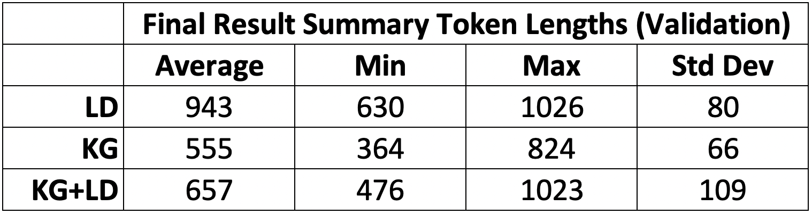
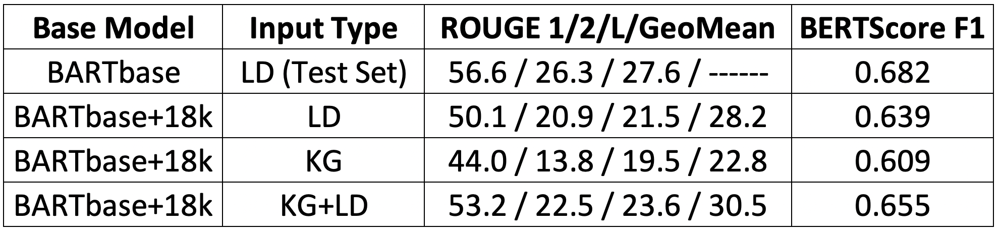
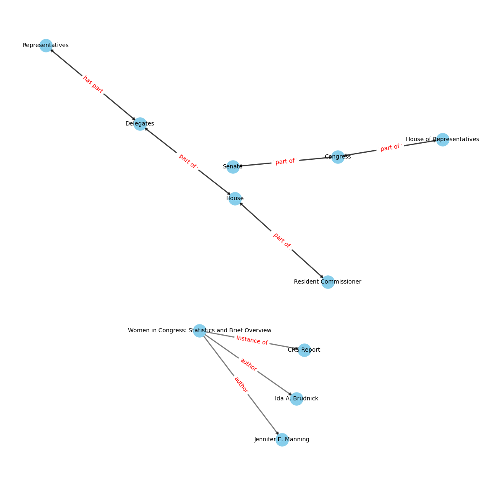

Summarizing
Knowledge-Graph-Augmented Long Documents
By Patrick O’Callaghan, Sheel Sansare, Tristan
Wang as part of the Stanford CS224W Winter 2023 course project
Our colaboratory notebook provides some additional detail of our
codebase.
To-Do List (Remove When Done)
Explain objective function we are optimizing during
training.
Submit test results to Scrolls.
Present key result that length of summary is strongly dependent
on input: LD < KG + LD < KG. Explain why this is.
Upload models to Hugging Face.
Figures
Shakespeare image
Sheel’s KG.
Plot distribution of LD, KG, and summary sizes for the 3
splits.
Graph convergence of summary length (number of tokens) to 90 for
LDs, 750 for combined, 800+ for KGs.
Training / loss and other graphs from the training. we need to
discuss training in more detail eg what is the loss function? or how
does the trainer work? The relevant module is src/utils/custom_seq2seq_trainer.py I think we need to
summarize this either in the colab or the blog. This custom trainer has
minor modifications of https://huggingface.co/docs/transformers/v4.25.1/en/main_classes/trainer#transformers
Trainer This means that it uses a standard cross-entropy loss function
... adamw optimizer
Table of results comparing R1, R2, RL, BERTScore F1 for the 3
experiments. Bold the best performers.
Acknowledge any potential weaknesses in our experimental
approach: 13.1 eg there may be an advantage to the combined model. What
would we do differently with more time: fine-tune for longer summaries
using the other two datasets (LD and KG alone). Then repeat to see if
KG+LD still wins. I don’t think this is too much of a problem as, if
there is no improvement to be made, training will quickly halt. 13.2
training involves truncating the long document to just under 16.5k
tokens. By putting the KG at the front of the text, we are truncating
more of the LD. For the longest of documents, the KGs are upto 50k
tokens long.
Introduction
Long documents are often difficult to understand and summarize. This
is especially true of technical documents such as government reports
where entities are often obscure institutions or less-well-known
individuals. Literature provides one way of dealing with this form of
complexity: introduce a knowledge graph at the beginning of the
text. Famous examples include the works of Shakespeare where the
main text of each play is preceded by a dramatis personea or
cast of characters (and their relations).
<photo>
In these settings, the role of the knowledge graph is to provide a
structured and easy-to-refer-to characterisation of key entities in the
document. A more extensive example is a complicated historical text such
as Hilary Mantel’s “The mirror and the light”. There the contents page
is followed by seven pages of structured knowledge-graph-like text.
In this blog post, we explore how knowledge graphs (KGs) can applied
to improve the summarization of long documents. To do so, we exploit a
recent innovation in long-document summarization that allows for
documents of arbitrary length called unlimiformer.
Problem Statement
Until recently long documents were already too long for the limited
context window of attention of transformer models. Whilst the context
window is still limited, various ways to extend the context window have
emerged. A natural, yet counter-intuitive, question then arises:
Will summarization improve if we extend or augment a document
with its knowledge graph?
Our conjecture is that augmenting long documents with their knowledge
graphs will indeed help large language models generate better summaries
of long documents. Our goal is therefore to build the right datasets,
choose the right architecture and design suitable experiments that will
enable us measure any possible impact of including a “cast of entities”
(and their relations) at the beginning of the document.
Knowledge Graphs
(KGs) of Long Documents (LDs)
Knowledge graphs stand in contrast with long documents in that they
are structured and concise. They form a significant reduction of the
document to facts (expressed as relations between entities).
We choose the REBEL end-to-end relation extractor to generate our
knowledge graphs.
Two new KG datasets
In this project, we generate a new collection of knowledge graphs:
one for each example in the GovReport dataset. This is a significant
undertaking for two reasons:
there are approximately 19,500 documents in GovReport;
the variance in the length of documents is significant and this
leads to major hardware management issues during generation.
There are significant design choices relating to how relations are
specified and passed to the language model to generate summaries. We
specify each KG as a single sequence of subsequences: one subsequence
for each relation triplet in the KG. We then integrate the collection of
KGs with GovReport.
The first
dataset replaces each LD in GovReport with a KG. The second
dataset replaces each LD with a single string that is the
concatenation of the KG and LD.
Unlimiformer is a recent retrieval-based method for
augmenting LLMs at the decoder level, is the first long-range
transformer to support unlimited length inputs. The key innovation of
unlimiformer is to create a datastore of encodings which correspond to
each token in the original document, and use the k-nearest neighbors (k-NN) algorithm to select the k most relevant tokens in the
datastore during decoding.
def search(self, queries, k):""" -search method retrieves the indices of the k closest vectors to query """iflen(queries.shape) ==1: # searching for only 1 vector, add one extra dimself.logger.info("Searching for a single vector; unsqueezing") queries = queries.unsqueeze(0)assert queries.shape[-1] ==self.dimension # query vectors are same shape as "key" vectorsifself.use_flat_index:ifself.gpu_index: scores, values = faiss.knn_gpu(faiss.StandardGpuResources(), queries,self.keys, k, metric=faiss.METRIC_INNER_PRODUCT, device=self.device.index )
Our experiments
Our experiments focus on comparing the summary outputs across the
three datasets: the original GovReports, the GovReportsKG and the
GovReportsKG+LD. Our initial findings reveal significant differences
between the summaries generated from LDs vs the new datasets. The
default BART model produces summaries of approximately 130 tokens with a
typical range of 100 to and 150 tokens. In contrast, the KGs and KG+LDs
generated summaries of approximately 900 tokens with a typical range of
600 to 1100. The target/golden summaries for GovReport are closer to the
latter with the number of tokens being 600 on average with a typical
range of between 400 and 1000.
Initial Results Table
Initial Result Summary Token Lengths (Validation) | | Average | Min |
Max | Std Dev | |——–|————————————————–|—–|——|——–| | LD | 128 | 86 | 130
| 2 | | KG | 737 | 494 | 1022 | 65 | | KG+LD | 755 | 500 | 916 | 52
|
We explore the cause of these differences and refine our experiments
to control for length of summary. We do so by re-initializing training
with a model that is fine-tuned to produce longer summaries. The goal is
to create a fair “horse race” to compare summarization performance
across the three datasets.
Overview of our final
results
Once we control for length of summary, our final results are in line
with our initial hypothesis. We summarise these results in [fig:summary-of-results-intro].

Final Results Table
Final Result Summary Token Lengths (Validation) | | Average | Min |
Max | Std Dev| |——–|————————————————|——|——|——–| | LD | 943 | 630 | 1026
| 80 | | KG | 555 | 364 | 824 | 66 | | KG+LD | 657 | 476 | 1023 | 109
|

Results Table
Base Model
Input Type
ROUGE 1/2/L/GeoMean
BERTScore F1
BARTbase
LD (Test Set)
(56.6/26.3/27.6/—–)
0.682
BARTbase+18k
LD
(50.1/20.9/21.5/28.2)
0.639
BARTbase+18k
KG
(44.0/13.8/19.5/22.8)
0.609
BARTbase+18k
KG+LD
(53.2/22.5/23.6/30.5)
0.655
We find that the best summaries are indeed produced by the combined
KG+LD input. This is followed by LDs and then finally KGs. There is a
significant difference in performance between the three. All our results
are for the validation set.
Methodology
We use
We compare and contrast the LD summaries generated by 3
transformer-based LLM models. Firstly, we train the facebook/BART base
model using the unlimiformer augmentation, which operates on the entire
LD and employs the k-NN
algorithm. Secondly, we repeat the previous exercise but with KGs as
inputs instead of LDs. Thirdly, we repeat the previous exercise with
string inputs of concatenated KGs and LDs (in this order).
Specifics of generating each
KG
Our baseline dataset is the Hugging Face version of GovReport [@huang2021efficient], a
well-established LD summarization dataset with many practical
applications. To generate the required datasets, we use REBEL, a pre-trained model that can be found
on Hugging Face, to perform one-shot named-entity
recognition (NER) and relation extraction (RE). This end-to-end approach
stands in contrast to the traditional two-step approach (eg. Spacy and
Stanford …) We explored some of the alternatives to REBEL and discuss
those in more detail in the appendix
(fix refs ^)
REBEL
We choose REBEL because at the time of writing it is the top performing end-to-end relation extractor on the DocRED
dataset. Moreover, it is more straightforward and fast to implement
and produced better KGs than the alternatives we tried. Moreover, with
more time to develop our framework, we believe that REBEL would be
well-suited to integration with Unlimiformer to generating KGs at
inference time. (The LD needs to be split into chunks for both KG and
summarization, and Unlimiformer is designed to capture hidden encodings
of inputs, so an integration of this form would be very natural. We
leave this extension to future work.)
Given the time and compute resources available to us, through trial
and error, we found that extracting three or four head-relation-tail
triplets per 128-token chunk is optimal. We set the span_length,
parameter, num_beams parameters to control
extraction. Recall that num_beams is the maximum number of
candidates (in this case relation triplets) that the attention mechanism
will hold over the span_length of text, which is in this
case 128 tokens or approximately the length of a single paragraph.
[code example here]
put the following comment the figure caption or colab (it’s
more a comment for marks than a general interest) Once the
triplets are extracted, we use NetworkX to create a directed graph, and
MatPlotLib to visualize and plot the results. Below is a sample image of
a knowledge graph produced from a gold summary.

KG Plot
BART-specific
Knowledge Graph representation
We chose to use the beginning of sequence (BOS, ‘<s>’) and end
of sequence (EOS, ‘</s>’) tokens to separate triples in our
knowledge graphs (KGs) with the intent of aligning with BART’s
understanding of sequence boundaries, this approach has specific
implications:
Clear Segmentation of Information: Using BOS and
EOS tokens to delimit triples in the KG makes each triple a distinct
segment from the model’s perspective. This is beneficial since we want
the model to treat each triple as an independent unit of
information.
Facilitating Attention Across Segments: This
segmentation should help the model’s attention mechanism focus on each
triple individually, potentially enhancing the model’s ability to
capture the nuances of each relationship within the KG.
Potential for Contextual Integration: While each
triple is treated as a separate sequence, the overall
sequence-of-subsequences structure still allows BART to integrate these
segments contextually. The model can still learn to understand the KG as
a whole, even though it processes each triple individually.
Specifics of
augmenting the GovReport dataset
GovReport
The GovReport dataset is a well-established long-document
summarization datasets that is both publicly available and ready-to-use.
We use it because it is a large and popluar dataset that has many
real-world applications. The Hugging Face GovReport 1
dataset has an approximate 90/5/5%
split of approximately 19.5k
document-summary pairs.
Training
Unlimiformer
**Why unlimiformer, and what is it?** Augmenting large language
models (LLMs) to handle long documents using retrieval-based methods is
a highly active area of research. Since Vaswani et al 2017, transformers
have become the default approach to natural language processing.
Transformers have succeeded due to their ability to capture long range
dependencies between tokens. They do so by abandoning the sequential
approach of recurrent neural networks and instead allowing the decoder
to attend to a complete graph over the encoded hidden states of tokens.
The complexity of complete graphs is therefore quadratic in the number
of tokens. The result is a powerful attention mechanism, but
one that is local and restricted to the context window. The
context window of ChatGPT-3.5 is 4,096 tokens, while the average novel
contains well over 100,000 tokens. Proprietory models such as GPT-4 and
Claude provide users with models that extend beyond 100,000 tokens, but
the question remains: what is the best way to achieve this?
Retrieval-Augmentations of
LLMs
Unlimiformer stands out for its novel integration of retrieval
mechanisms directly into the Transformer architecture. This integration
allows the model to dynamically access large-scale, a document-specific
external (FAISS) datastore during inference. This datastore is populated
with encoded representations of the full input text. The key advantage
of this approach is that it enables the model to augment its language
generation capabilities with contextually relevant, externally stored
information. This is useful for tasks requiring deep, specific knowledge
or for improving the model’s ability to stay updated with recent
information.
Comparison with
Other Methods (Datastore Access)
Unlike traditional methods where datastores are accessed externally
or through separate mechanisms, Unlimiformer integrates the datastore
access internally within its architecture. This internal integration
facilitates a more seamless and efficient interaction between the
model’s language processing capabilities and the external knowledge
sources. In contrast, other models might rely on separate retrieval
steps or external systems to incorporate knowledge from datastores,
which can introduce complexity and inefficiency. Unlimiformer’s
approach, therefore, represents a significant advancement in making
retrieval-augmented models more streamlined and effective.
This highlights Unlimiformer’s innovative approach to enhancing LLMs
with retrieval-augmented capabilities, particularly its unique internal
mechanism for accessing and integrating external datastores.
BART
We focused on training the facebook/bart-base model
(henceforth BART). Although there now many more advanced models, and
many of these (e.g. Llama) are compatible with Unlimiforemer, BART
provides the main benchmark in the unlimiformer paper [@bertsch2023unlimiformer].
It has a context window of 1024 tokens, anIn addition, each model treats
special tokens slightly differently and, as we shall see, the way tokens
are treated is important to the resulting training on KGs.
BART, like other transformer-based models, is considered adept at
handling structured inputs due to several key features of its
architecture and design. Structured inputs refer to data that
is organized in a predictable, often hierarchical manner, with clear
relationships between different parts. This contrasts with unstructured
data, like free-form text, where the organization and relationships are
not as explicitly defined. Examples of structured inputs include:
databases or tables; XML or JSON data, where elements are nested and
have defined relationships; Knowledge graphs, where information is
represented as entities and relationships (triples).
How we use BART for training
Appropriateness of the BART
Model
When training our model, we chose to feed the relational data of our
KGs as tokens into unlimiformer, as opposed to embedding the KGs as
separate relations into vector space. We believe that our approach is
more appropriate as it allows us to better utilize the the unlimiformer
framework, while preserving as much of the KG structure as possible
within the dataset.
**Work to train models individually.**
Background on BART
**Structured Inputs
**Why BART Handles Structured Inputs Well**
1. **Self-Attention Mechanism**: BART’s transformer architecture uses
a self-attention mechanism, which allows it to consider the entire input
sequence at once. This enables the model to understand relationships
between different parts of the input, essential for structured data.
2. **Contextual Understanding**: BART can capture context from both
left and right of each token in the input sequence. This bi-directional
context is crucial for understanding structured inputs, where the
meaning often depends on the surrounding elements.
3. **Layered Encoding**: The layered structure of transformers
enables them to capture and encode different levels of abstraction,
which is beneficial for understanding hierarchical and nested structures
in the input.
4. **Pre-training on Diverse Data**: BART is pre-trained on a wide
range of data, including structured formats. This pre-training helps it
to learn patterns and structures that are common in various types of
data.
5. **Flexibility in Input Representation**: BART can handle sequences
with special tokens and delimiters, allowing it to adapt to different
types of structured inputs. For example, it can process inputs where
parts of the data are segmented or highlighted using special tokens.
6. **Adaptability to Task-Specific Structures**: With fine-tuning,
BART can adapt to specific types of structured inputs relevant to a
particular task, enhancing its ability to process and generate
meaningful outputs based on that structure.
In summary, BART’s ability to process and understand the entire input
sequence contextually, along with its adaptability and pre-training on
diverse data, makes it well-suited for handling structured inputs. This
capability allows it to effectively process and generate outputs based
on inputs like knowledge graphs.
In this context, the slower training times you observed might not be
due to the tokenization strategy per se but could involve other factors
such as the complexity of the relationships in the KGs, the adaptation
of the model to this unique structuring of inputs, or other
computational aspects related to how the BART model processes these
inputs.
Your approach aligns with the design principles of transformer models
like BART, which are adept at handling structured inputs. The key would
be to ensure that the rest of your training pipeline, including data
preprocessing and model fine-tuning, is optimized to leverage this
structure effectively.
Metrics
When it comes to summarizing long documents, metrics like ROUGE and
BertScore are critical. They offer a standardized, quantitative way to
assess the performance of summarization algorithms.
ROUGE Metrics
ROUGE-1 measures the overlap of unigrams
(individual words) between the system-generated summary and a set of
reference summaries. It captures the surface-level accuracy, essentially
checking if the key terms appear in the summary.
ROUGE-2 measures the overlap of unigrams
(individual words) between the system-generated summary and a set of
reference summaries. It captures the surface-level accuracy, essentially
checking if the key terms appear in the summary.
ROUGE-L focuses on the longest common subsequence
between the generated summary and the reference. It can recognize longer
phrases that appear in both texts, which reflects a higher level of
semantic similarity.
ROUGE Geometric Mean is a composite score that
combines ROUGE-1, ROUGE-2, and ROUGE-L (sometimes including others, like
ROUGE-SU4) by calculating their geometric mean. It balances the
contribution of each metric, offering a more holistic view of the
quality of the summary.
BertScore
BertScore F1 leverages the power of BERT. BertScore
computes the similarity of each token in the candidate summary to each
token in the reference summary and vice versa, resulting in precision
and recall scores. The F1 score is the harmonic mean of these two,
providing a balance that considers both the summary’s coverage of
content and the content’s relevance to the summary.
Results
**How did our model perform compared to the baseline?
Explanation?**
**Why is the average summary 800 words and not 500 words?**
Interpreting the performance differences between models trained on
long documents (LD) and knowledge graphs (KG) based on the provided
metrics involves considering what each metric measures and how that
relates to the nature of the inputs:
1. **ROUGE Scores**: - **ROUGE-1 (LD: 23, KG: 40)**: This measures
the overlap of unigrams (individual words) between the generated summary
and the reference summary. The substantially higher score for KG
suggests that the KG-based model is better at capturing key content
words. This could be because KGs, being structured and concise, might
enable the model to focus on essential terms more effectively. -
**ROUGE-2 (LD: 11.74, KG: 11.47)**: This metric evaluates bigram
overlap, indicating how well the model captures phrases and specific
content. The similar scores suggest that both models are nearly equally
effective at capturing phrase-level information, though the LD model has
a slight edge. - **ROUGE-L (LD: 14.7, KG: 17.7)**: ROUGE-L assesses the
longest common subsequence, which reflects sentence-level structure and
coherence. The higher score for KG indicates better preservation of
sentence structure or flow from the KG inputs.
2. **BERTScore**: - **Precision (LD: 0.69, KG: 0.58)**: Precision
measures how much of the content in the generated summary is relevant or
present in the reference summary. The higher precision for LD implies
that it might be better at generating content closely aligned with the
reference, likely due to the richer context provided by the long
document. - **Recall (LD: 0.52, KG: 0.57)**: Recall assesses how much of
the reference summary is captured in the generated summary. The higher
recall for KG suggests it is better at including essential points from
the reference summary, possibly due to the distilled and focused nature
of KGs. - **F1/Aggregated BERTScore (LD: 0.59, KG: 0.57)**: This
balanced metric considers both precision and recall. The scores are
quite close, indicating that overall, both models are similarly
effective in terms of content relevance and coverage, though the LD
model has a marginal advantage.
Given these results after 8000 training steps:
- The KG-based model excels in capturing key content words and
maintaining sentence structure, likely due to the concise and structured
nature of KGs. - The LD-based model, despite its lower performance in
some ROUGE metrics, achieves higher precision in BERTScore, suggesting
its strength in generating summaries that are more aligned with the
content and style of the reference summaries. This might be due to the
rich, contextual information available in long documents. - The marginal
differences in ROUGE-2 and BERTScore/F1 indicate that both models have
their strengths and weaknesses. The LD model seems to be better for
generating precise content, while the KG model is more effective in
covering essential information and maintaining structure.
In conclusion, each model has its advantages depending on the desired
outcome of the summary: whether the focus is on precise content
alignment (LD) or on covering key points and maintaining structure (KG).
Continued training and further optimization could enhance the
performance of both models, potentially narrowing these gaps.
Conclusion
**Do we recommend using KGs for LD summarization?**
Appendix
Alternatives to REBEL
Other means of performing NER and RE we considered include spaCy-LLM,
DyGIE++, and LlamaIndex. spaCy-LLM2 is a package that
integrates LLMs into natural language processing (NLP) pipelines
provided by spaCy, an industry-standard NLP library. In particular, its
built-in spacy.REL.v13 component supports RE
with both zero-shot and few-shot prompting, but relies on an upstream
NER component for entity extraction.
DyGIE++ is an RE component that refines and scores text spans
designed to capture both intra-sentence and cross-sentence context. We
cloned the code from the official GitHub repository linked here4 and attempted to replicate the
process of training a model for RE, but were unsuccessful due to
technical difficulties.
Finally, LlamaIndex, a framework for connecting data sources for
LLMs, has a class called KnowledgeGraphIndex5
which is compatible with FAISS, the datastore that unlimiformer uses to
conduct k-NN searches of
top-level hidden state encodings, which would simplify our task of NER
and RE.
 | | Input
Token Lengths (Train/Dev/Test) | | | | |——-|———————————————|——-|——-|———|
| | Average | Min | Max | Std Dev | | LD | (9617/10044/9209) |
(74/237/561) | (303192/69300/38735) | (7644/7106/5446) | | KG |
(2820/2902/2766) | (121/401/223) | (63988/13049/12728) |
(2013/1782/1625) | | KG+LD | (13203/13854/12829) | (487/1541/825) |
(313947/77692/58815) | (9753/9065/7525) |
| | Input
Token Lengths (Train/Dev/Test) | | | | |——-|———————————————|——-|——-|———|
| | Average | Min | Max | Std Dev | | LD | (9617/10044/9209) |
(74/237/561) | (303192/69300/38735) | (7644/7106/5446) | | KG |
(2820/2902/2766) | (121/401/223) | (63988/13049/12728) |
(2013/1782/1625) | | KG+LD | (13203/13854/12829) | (487/1541/825) |
(313947/77692/58815) | (9753/9065/7525) |